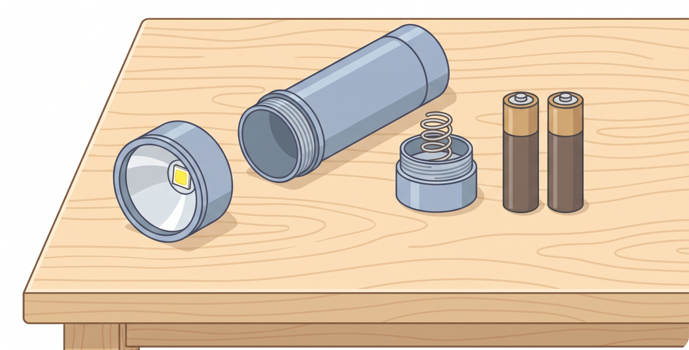
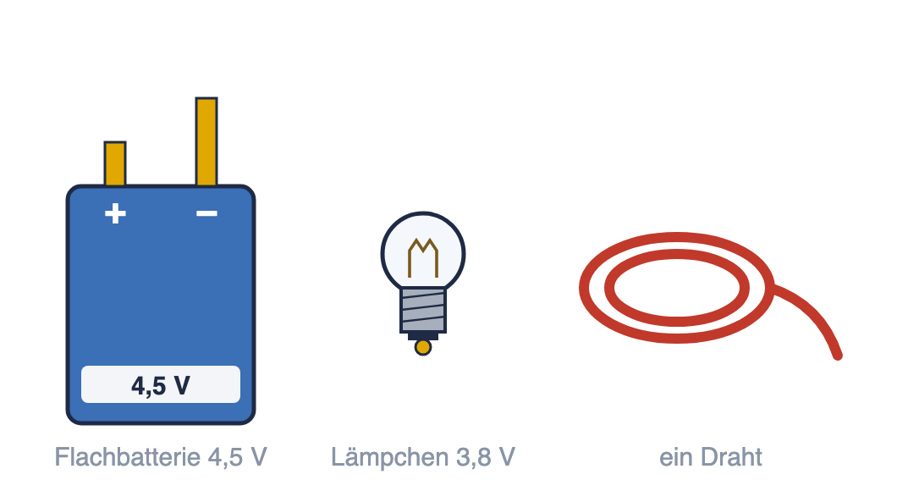
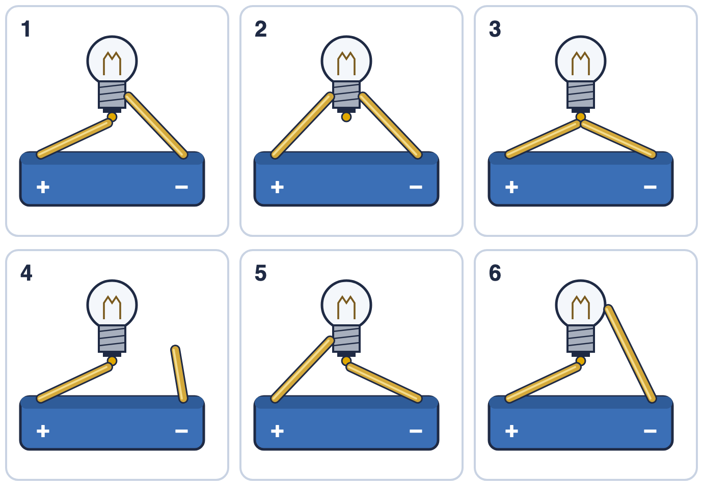
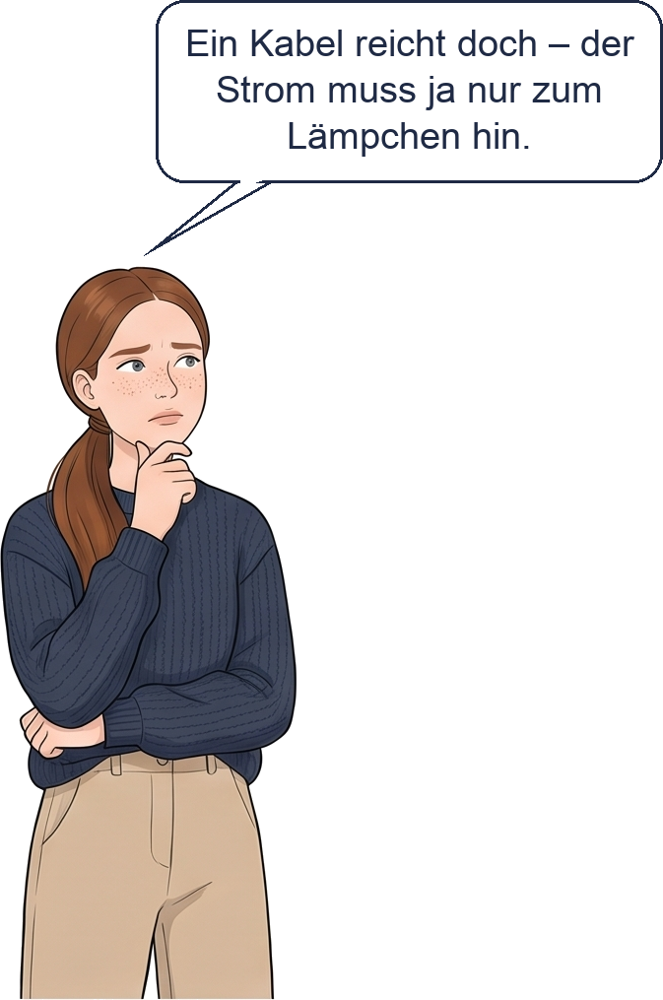
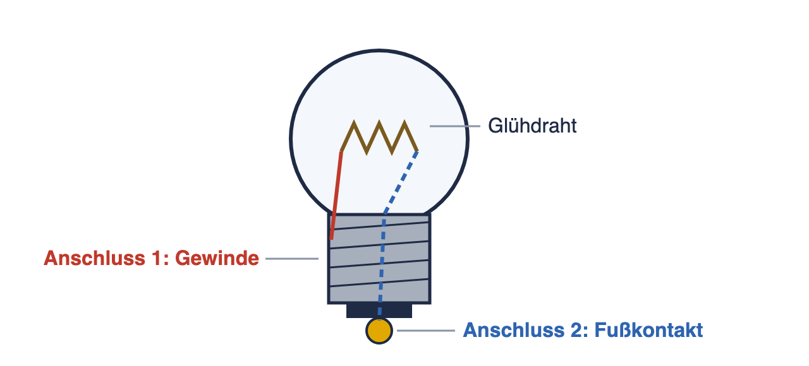

Wo sind wir? A Ladung und Stromkreis · B Stromstärke und Spannung · C Schaltungen · D Widerstand · E Energie und Kosten · F Wirkungen und Gefahren

In einer Taschenlampe stecken Batterien, ein Lämpchen und ein paar Metallteile. Kannst du selbst ein Lämpchen zum Leuchten bringen?
✎ zu zweit · ins Skript · Material: Kiste Elektrizität
Bringt das Lämpchen zum Leuchten. Das Lämpchen darf die Batterie dabei nicht berühren.

Braucht ihr Werkzeug? Fragt danach.
Kommt ihr nicht weiter? Tipps →
So haben wir es geschafft (Skizze und ein Satz):
Hier zeichnen: eure Schaltung |
________________________________________________
________________________________________________
Stopp. Scrollt erst weiter, wenn euer Lämpchen leuchtet – ab hier steht, wie es geht. |
✎ zu zweit · Material: Tütchen „Leitet das?“
Öffnet euren Stromkreis an einer Stelle und haltet jeden Gegenstand in die Lücke. Kreuzt an.
| Gegenstand | leitet | leitet nicht |
| Büroklammer | ☐ | ☐ |
| Alufolie | ☐ | ☐ |
| Bleistiftmine | ☐ | ☐ |
| Radiergummi | ☐ | ☐ |
| Holzstab | ☐ | ☐ |
◆ Erkläre: Warum leuchtet das Lämpchen mit der Bleistiftmine nur schwach, mit der Büroklammer aber hell?
Hilfe: Checkliste und Satzanfänge →
________________________________________________
________________________________________________
________________________________________________
✎ allein
a) Das Lämpchen wird ohne Draht direkt auf die beiden Zungen der Batterie gesetzt. Welche Lämpchen leuchten? Kreuze an.

| 1 | 2 | 3 | 4 | 5 | 6 | |
| leuchtet | ☐ | ☐ | ☐ | ☐ | ☐ | ☐ |
| leuchtet nicht | ☐ | ☐ | ☐ | ☐ | ☐ | ☐ |
 | b) Stimmt das? Hat Anna recht? Kreuze an und begründe. ☐ Anna hat recht ☐ Anna hat nicht recht Hilfe: Checkliste und Satzanfänge → ________________________________ ________________________________ ________________________________
|
✎ allein · ein Satz
Wie bringst du das Lämpchen zum Leuchten? Schreibe einen Satz mit geschlossener Stromkreis und zwei Anschlüsse.
________________________________________________
________________________________________________
Das Wichtigste 1. Die Batterie hat zwei Pole: den Pluspol (+) und den Minuspol (−). Ein Lämpchen leuchtet nur in einem geschlossenen Stromkreis: vom einen Pol durch das Lämpchen zum anderen Pol. 2. Das Lämpchen hat _________ Anschlüsse (Gewinde und Fußkontakt). Jeder Anschluss wird mit einem Pol verbunden – deshalb braucht man zwei Leitungen. (An der Batterie heißen die Anschlüsse Pole.) 
3. Leiter lassen den Strom durch: alle ______________ und Graphit (Bleistiftmine). Isolatoren (Nichtleiter) lassen ihn nicht durch: Kunststoff, Holz, __________, Papier, Glas. 4. Ein Draht ist innen aus Kupfer (Leiter) und außen aus Kunststoff (Isolator). Damit er Kontakt hat, muss man ihn an den Enden abisolieren (die Hülle entfernen). |
Neue Wörter
|
Schon fertig? Dann fang mit der Aufgabe mit Material auf der nächsten Seite an.